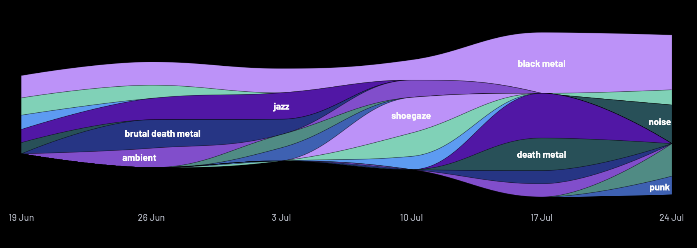
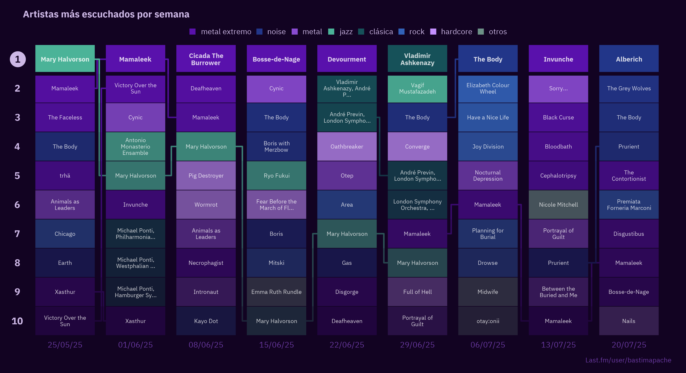

Gráfico de mis artistas y géneros musicales más escuchados según Last.fm
30/7/2025
Last.fm es una plataforma donde las personas van registrando la música que escuchan diariamente, y luego pueden obtener estadísticas sobre sus gustos musicales y recomendaciones basadas en los gustos de usuarios similares.
Tenía ganas de reproducir en R uno de los gráficos que aparecen en el reporte mensual:
Así que me apliqué con {ggplot2}, usando un paquete que agrega una visualización similar, y usando otro paquete para descargar los datos de mi perfil de Last.fm.
Obtención de datos
Para obtener los datos de mis canciones escuchadas usé
el paquete {lastfmR}:
devtools::install_github("ppatrzyk/lastfmR")
library(lastfmR)
La obtención de los datos de Last.fm se hace con las siguientes funciones:
scrobbles <- get_scrobbles(user = "bastimapache")
artist_info <- get_library_info(user = "bastimapache")
scrobbles
# A tibble: 17,000 × 4
date artist track album
<POSIXt> <chr> <chr> <chr>
1 2025-07-27 18:38:27 Bullet for My Valentine Tears Don't Fall The Poison
2 2025-07-25 15:35:20 Premiata Forneria Marconi Geranio Per un amico
3 2025-07-25 15:13:14 Premiata Forneria Marconi Il Banchetto Per un amico
4 2025-07-25 15:06:31 Premiata Forneria Marconi Per Un Amico Per un amico
5 2025-07-25 15:01:41 Premiata Forneria Marconi Generale Per un amico
6 2025-07-25 14:48:01 Premiata Forneria Marconi Appena un po' Per un amico
7 2025-07-25 13:46:32 The Body & OAA Docile Gift Enemy of Love
8 2025-07-25 13:43:07 The Body & OAA Ignorant Messiah Enemy of Love
9 2025-07-25 13:40:40 The Body & OAA Miserable Freedom Enemy of Love
10 2025-07-25 13:37:31 The Body & OAA Barren of Joy Enemy of Love
# ℹ 16,990 more rows
artist_info
# A tibble: 3,882 × 5
artist user_scrobbles global_listeners global_scrobbles artist_tags
<chr> <int> <int> <int> <chr>
1 Opeth 5006 1066799 110560572 Progressiv…
2 Magma 4905 158887 3353010 Zeuhl; Pro…
3 Between the Bur… 4519 411709 27305709 Progressiv…
4 Erik Satie 3439 1690933 35397288 Classical;…
5 ASIAN KUNG-FU G… 3318 601332 33012597 J-rock; ja…
6 Gojira 3289 898440 71798696 death meta…
7 Boris 3178 538299 21493173 drone; Sto…
8 Rosetta 3148 140465 6019868 Post-Metal…
9 The Beatles 3019 5830439 885054050 classic ro…
10 Mastodon 3006 1139246 72786659 Progressiv…
# ℹ 3,872 more rows
Los datos obtenidos son el historial de canciones escuchadas, y los artistas escuchados que además incluye las etiquetas de cada artista, que corresponden a los géneros o subgéneros musicales que las y los usuarios de Last.fm agregan.
Procesamiento de datos
Teniendo estos dos conjuntos de datos, los unimos según la variable del nombre de artista, para que cada canción escuchada tenga las etiquetas del artista:
library(dplyr)
library(lubridate)
library(tidyr)
scrobbles_tags <- scrobbles |>
tibble() |>
left_join(artist_info |> select(artist, artist_tags))
Luego, como cada artista puede tener más de una etiqueta, separamos las etiquetas en distintas columnas:
scrobbles_tags_2 <- scrobbles_tags |>
separate(artist_tags, sep = "; ",
into = paste("artist_tags", 1:10, sep = "_"))
glimpse(scrobbles_tags_2)
Rows: 17,000
Columns: 14
$ date <POSIXt> 2025-07-27 18:38:27, 2025-07-25 15:35:20, 2025-07-25…
$ artist <chr> "Bullet for My Valentine", "Premiata Forneria Marconi",…
$ track <chr> "Tears Don't Fall", "Geranio", "Il Banchetto", "Per Un …
$ album <chr> "The Poison", "Per un amico", "Per un amico", "Per un a…
$ artist_tags_1 <chr> "metalcore", "Progressive rock", "Progressive rock", "P…
$ artist_tags_2 <chr> "metal", "italian progressive rock", "italian progressi…
$ artist_tags_3 <chr> "hardcore", "italian", "italian", "italian", "italian",…
$ artist_tags_4 <chr> "emocore", "Progressive", "Progressive", "Progressive",…
$ artist_tags_5 <chr> "seen live", "italian prog", "italian prog", "italian p…
$ artist_tags_6 <chr> NA, NA, NA, NA, NA, NA, NA, NA, NA, NA, NA, NA, NA, NA,…
$ artist_tags_7 <chr> NA, NA, NA, NA, NA, NA, NA, NA, NA, NA, NA, NA, NA, NA,…
$ artist_tags_8 <chr> NA, NA, NA, NA, NA, NA, NA, NA, NA, NA, NA, NA, NA, NA,…
$ artist_tags_9 <chr> NA, NA, NA, NA, NA, NA, NA, NA, NA, NA, NA, NA, NA, NA,…
$ artist_tags_10 <chr> NA, NA, NA, NA, NA, NA, NA, NA, NA, NA, NA, NA, NA, NA,…
Ahora que tenemos hasta 10 columnas de etiquetas, transformamos los datos a formato largo, para obtener una sola variable que contenga hacia abajo todas las etiquetas de cada artista.
scrobbles_tags_3 <- scrobbles_tags_2 |>
pivot_longer(cols = starts_with("artist_tags"),
names_to = "tags_n", values_to = "tags") |>
filter(!is.na(tags)) |>
select(-tags_n) |>
mutate(tags = tolower(tags))
scrobbles_tags_3 |>
slice(65:75) |>
select(artist, tags)
# A tibble: 11 × 2
artist tags
<chr> <chr>
1 The Body & OAA drone
2 The Body & OAA drone metal
3 The Body & OAA noise
4 The Body & OAA experimental
5 The Body & OAA drone
6 The Body & OAA drone metal
7 Alberich noise
8 Alberich power electronics
9 Alberich industrial
10 Alberich death industrial
11 Alberich electronic
Excluimos algunas etiquetas de géneros musicales que son demasiado amplios:
scrobbles_tags_4 <- scrobbles_tags_3 |>
filter(tags != "seen live",
!tags %in% c("metal", "electronic", "hardcore", "experimental")) |>
add_count(tags, name = "tag_n")
Luego especificamos cuántas etiquetas máximas queremos tener, y extraemos el Top 15 de géneros musicales más escuchados por mi:
n_tags <- 15
top_tags <- scrobbles_tags_4 |>
distinct(tags, tag_n) |>
slice_max(tag_n, n = n_tags) |>
pull(tags)
top_tags
[1] "black metal" "death metal" "noise"
[4] "jazz" "post-black metal" "grindcore"
[7] "ambient" "progressive metal" "sludge"
[10] "brutal death metal" "avant-garde" "doom metal"
[13] "drone" "post-rock" "deathcore"
Filtramos todas las canciones escuchadas para que solamente queden las que corresponden a uno de estos 15 géneros más escuchados, y dejamos solamente la primera etiqueta de cada canción:
scrobbles_tags_5 <- scrobbles_tags_4 |>
filter(tags %in% top_tags) |>
group_by(date) |>
slice_max(tag_n, n = 1)
scrobbles_tags_5
# A tibble: 14,127 × 6
# Groups: date [14,110]
date artist track album tags tag_n
<POSIXt> <chr> <chr> <chr> <chr> <int>
1 2023-11-06 13:23:28 Dreamcrusher INCINERATOR INCINERATOR noise 2633
2 2023-11-06 13:29:44 Dreamcrusher Cathedral Of Moths INCINERATOR noise 2633
3 2023-11-06 13:29:44 Dreamcrusher Pseudogender INCINERATOR noise 2633
4 2023-11-06 13:36:34 Dreamcrusher Pseudogender INCINERATOR noise 2633
5 2023-11-06 13:36:34 Dreamcrusher Vulpeculae Freeze INCINERATOR noise 2633
6 2023-11-06 13:44:43 Dreamcrusher Vulpeculae Freeze INCINERATOR noise 2633
7 2023-11-06 13:44:43 Dreamcrusher Bane INCINERATOR noise 2633
8 2023-11-06 13:57:07 Merzbow Promotion Man Merzbeat noise 2633
9 2023-11-06 13:57:07 Dreamcrusher Bane INCINERATOR noise 2633
10 2023-11-06 14:06:04 Pharmakon No Natural Order Contact noise 2633
# ℹ 14,117 more rows
Finalmente hacemos el conteo de géneros musicales por semana:
scrobbles_tags_6 <- scrobbles_tags_5 |>
mutate(date = floor_date(date, "week")) |>
count(date, tags)
scrobbles_tags_6
# A tibble: 858 × 3
# Groups: date [90]
date tags n
<dttm> <chr> <int>
1 2023-11-05 00:00:00 ambient 23
2 2023-11-05 00:00:00 avant-garde 1
3 2023-11-05 00:00:00 black metal 60
4 2023-11-05 00:00:00 death metal 16
5 2023-11-05 00:00:00 grindcore 1
6 2023-11-05 00:00:00 jazz 21
7 2023-11-05 00:00:00 noise 35
8 2023-11-05 00:00:00 post-rock 4
9 2023-11-05 00:00:00 progressive metal 12
10 2023-11-05 00:00:00 sludge 17
# ℹ 848 more rows
Visualización
Para reproducir el gráfico usé
el paquete {ggstream} que facilita la creación de gráficos de áreas apiladas una sobre otra.
install.packages("ggstream")
library(ggplot2)
library(ggview)
library(scales)
library(stringr)
library(ggstream)
Primero creamos paletas de colores para el gráfico:
paleta <- c("#C490FF",
"#62D4B6",
"#223689",
"#5911AC",
"#894BD2",
"#165159",
"#3262B8")
show_col(paleta)
color_base = "#5911AC"
color_fondo = col_mix(color_base, "black", amount = 0.8)
color_texto = col_mix(color_base, "white", amount = 0.7)
color_detalle = col_mix(color_base, "white", amount = 0.1) |>
col_saturate(-15)
show_col(c(color_base, color_fondo, color_texto, color_detalle))
Luego definimos algunos elementos del tema del gráfico, como el fondo oscuro y las letras claras, y la eliminación de elementos del panel del gráfico que no necesitamos:
theme_set(
theme(panel.background = element_rect(color = color_fondo, fill = color_fondo),
plot.background = element_rect(color = color_fondo, fill = color_fondo),
legend.background = element_rect(color = color_fondo, fill = color_fondo),
panel.grid = element_blank(),
axis.ticks = element_blank(),
axis.text = element_blank(),
axis.title = element_blank(),
text = element_text(color = color_texto),
legend.key.size = unit(3, "mm"),
legend.key.spacing.y = unit(2, "mm"),
legend.margin = margin(l = 2, t = 10),
plot.margin = margin(4, 4, 4, 4, "mm"))
)
scrobbles_tags_5 |>
filter(date > "2024-08-1") |> # límite inferior de fecha
ggplot() +
aes(date, n, color = tags, fill = tags) +
# geometría principal
geom_stream(bw = .7, sorting = "inside_out",
color = color_fondo, size = 0.1, show.legend = F) +
# puntos invisibles para hacer una leyenda con puntos
geom_point(size = 0, alpha = 0) +
# texto del gráfico,
geom_stream_label(
aes(label = case_when(tags %in% top_tags[1:7] ~ str_wrap(tags, 12), # sólo texto del top 7 de tags
.default = "")),
bw = .7, sorting = "inside_out",
color = "white", size = 2, fontface = "bold", lineheight = 0.8,
hjust = 0.5, vjust = 0.5, n_grid = 200) +
# escala de colores en base a la paleta
scale_fill_manual(values = colorRampPalette(paleta)(n_tags),
aesthetics = c("color", "fill")) +
# escala horizontal de fechas
annotate(geom = "text",
x = as.POSIXct(c("2024-09-15", "2024-12-15", "2025-03-15", "2025-06-15")),
label = format(as_date(fechas), "%m/%y"),
y = -160, color = color_detalle, size = 3) +
coord_cartesian(expand = F, clip = "off") +
# leyenda: sacar leyenda de relleno, y usar la de los puntos invisibles para que salga de puntos
guides(fill = guide_none(),
color = guide_legend(title = NULL, override.aes = list(size = 3, alpha = 1))) +
# textos
labs(title = "Géneros musicales más escuchados",
caption = "Last.fm/user/bastimapache") +
theme(plot.title = element_text(face = "bold", margin = margin(b = -10), hjust = 0),
plot.caption = element_text(color = color_detalle, hjust = 1, size = 8, vjust = 0),
plot.caption.position = "plot")
No se parece mucho el gráfico que quería copiar, quizá porque el original iba en un rango de tiempo mucho más breve, pero me gustó igual.
Algunos comentarios sobre esta visualización:
- crear paletas de colores haciendo mezclas de colores es más conveniente que andarlos eligiendo con un programa
- es complicado clasificar la música por géneros, sobre todo cuando la música que te gusta es rara y está muy metida en combinaciones de subgéneros. Elegir la etiqueta más popular de cada artista quizá no es la mejor idea, pero elegir varias etiquetas por artista igual podría inflar la representación de ciertos géneros con respecto a otros
- siempre va a ser difícil ponerle colores a gráficos con más de ocho categorías, así que en este caso los colores son casi de adorno
- el paquete
{ggstream}es súper conveniente para generar este tipo de visualizaciones, y tiene un montón de opciones para modificarlas y tener alternativas, pero realiza un montón de transformaciones de los datos por dentro, lo que dificulta su compatibilidad con algunas otras cosas de{ggplot2}; por ejemplo, cambia la escala de fechas para transformar los números, y eso te dificulta poder modificar la forma en que se ve la escala de fechas, lo que resolví simplemente agregando las fechas conannotate(). - junto con lo anterior, se devuelve casi obligatorio tener que usar la función
geom_stream_label()para agregar textos, lo que te quita harta libertad - quizás relacionado a lo anterior: traté de
grabar la evolución del gráfico con
{camcorder}, pero por alguna razón no pescaba al pasar a{ggstream} - el paquete
{lastfmR}de obtención de datos solamente extrajo las últimas 17.000 canciones escuchadas, pero en mi caso eso fue un poco más de un año de datos, así que fue suficiente. De todos modos hay ene paquetes y tutoriales para sacar datos de Last.fm, y ambién hay otras alternativas para bajar todos los datos de tu perfil, pero en este caso no creí que fuera necesario, sobre todo porque tengo un lapsus de un par de años donde dejé de usar Last.fm!
Después de esta, hice una variación de la misma visualización, pero en vez de mostrar géneros musicales, muestra artistas. Como ya tenía todo el código para hacer la visualización y procesar los datos, modificarlo para este nuevo fin fue muy fácil. Pueden ver todo el código que necesité
en el script lastfm_artists.R en el repositorio..
Al ver las marcadas tendencias que habían en mi rotación de artistas más escuchados, me entró la curiosidad y generé un ranking de artistas por semana:
Este fue bastante más complejo que los anteriores, porque tuve que programar toda la lógica para llegar a hacer un ranking que no tuviera empates1, y luego de eso, hacer el seguimiento de los artistas que iban repitiéndose semana a semana, para ver cómo iban cambiando en su posición de ranking entre las distintas semanas2. Todo este código se puede ver
en el script lastfm_weekly.R en el repositorio..
En términos visuales, este gráfico en realidad es una tabla hecha con geom_tile(), con líneas verticales con annotate("segment") que hacen una separación entre semanas, líneas que van conectando a los artistas consecutivos hechas con geom_step(), y efecto de sombra a medida que el ranking es menor que se hicieron con un geom_tile() donde la transparencia era ligada al ranking. También tiene distinto tamaño y grosor de letra para los artistas en el número 1, y colores que responden a recodificación de los géneros musicales en categorías más generales en vez de ponerle un color a cada subgénero del mundo. Mención especial al circulito con un 1 hecho con annotate().
Si bien a este gráfico tampoco lo grabé con {camcorder} mientras lo hacía, luego de terminarlo hice una especie de simulación paso por paso de cómo se genera la visualización de principio a fin:
-
Aquí la dificultad era que el ranking se define por el porcentaje semanal de canciones escuchadas que pertenecen a cada artista, pero ocurría que, si los números eran muy bajos, los porcentajes se repetían, porque un mismo artista era escuchado la misma cantidad de veces que otros. En estos casos, el desempate se hizo agregándole a los artistas un porcentaje que tenía que ver con el porcentaje de canciones escuchadas en total —de todos los tiempos— que del artista, y de esta manera dar privilegio al artista más escuchado en general en el ranking semanal. También se agrega un pequeñísimo número aleatorio para desempatar otros casos. ↩︎
-
El problema en estos casos era que se podía ir trazando una línea que muestre el cambio de posición semanal de un artista, pero la dificultad era hacer que la línea se cortara si el artista deja de ser escuchado una semana, pero que volviera a aparecer si vuelve a ser escuchado en una semana futura. La solución fue generar una variable que agrupa con un número único las escuchas consecutivas semanales de un artista, y si el artista no entra en el ranking en una o más semanas se genera un grupo distinto. Luego se usan estos grupos para que las líneas se unan solamente cuando las escuchas son consecutivas, en vez de qué se haga una línea que pase por encima de semanas donde el artista no entró al ranking. ↩︎